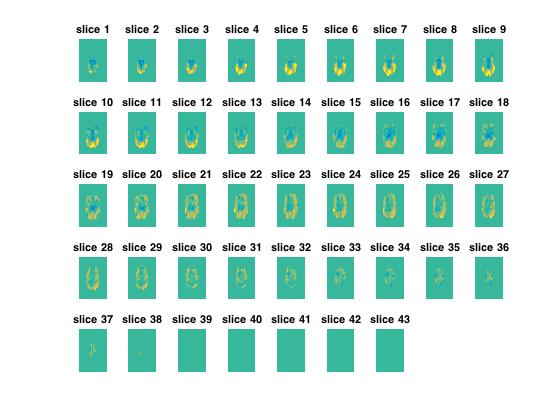

Searchlight analysis in the volume
This analysis is quite bare-bones - data is simulated to come directly from load_nii rather than through fmri_dataset, and voxel indices in each searchlight are computed directly in this script rather than using a helper function such as spherical_voxel_selection.
Note: for running searchlights it is recommended to use cosmo_searchlight and cosmo_spherical_neighborhood
- For CoSMoMVPA's copyright information and license terms, #
- see the COPYING file distributed with CoSMoMVPA. #
Contents
Define input files and searchlight radius
radius=3; % in voxel units config=cosmo_config(); data_path=fullfile(config.tutorial_data_path,'ak6','s01'); half1_fn=fullfile(data_path,'glm_T_stats_odd.nii'); half2_fn=fullfile(data_path,'glm_T_stats_even.nii'); mask_fn=fullfile(data_path,'brain_mask.nii');
Load the data and extract the data in the mask
ni_samples1=load_nii(half1_fn); ni_samples2=load_nii(half2_fn); ni_mask=load_nii(mask_fn); % Get the volume data half1_samples=ni_samples1.img; half2_samples=ni_samples2.img; mask=ni_mask.img; % combine the two halves, and define the masks samples=cat(4, half1_samples, half2_samples); nsamples=size(samples,4); % should be 6 half1_samples_mask=(1:nsamples)<=nsamples/2; half2_samples_mask=~half1_samples_mask;
Searchlight data 'contrast' definition
Define how correlations values are going to be weighted mean zero, positive on diagonal, negative elsewhere. Note that this matrix has a mean of zero, so under the null hypothesis that correlations are equal on and off the diagonal, weighting these correlations by the contrast matrix and then summing them should give a mean of zero as well.
contrast_matrix=eye(6)-1/6;
Define voxel offset positions in the searchlight
get the sphere offsets
sphere_offsets=cosmo_sphere_offsets(radius); noffsets=size(sphere_offsets,1);
Prepare for output
allocate space for data in searchlight once, then overwrite in for-loop below
sphere_data=zeros(nsamples,noffsets); voldim=size(mask); output=zeros(voldim); visited=false(voldim);
Run the searchlight
% for pretty progress reporting prev_msg=''; clock_start=clock(); % run over voxels in all three spatial dimensions for ii=1:voldim(1) for jj=1:voldim(2) for kk=1:voldim(3) % if outside the mask, continue with next voxel % >@@> if ~mask(ii,jj,kk) continue end % <@@< % fill up the sphere_data matrix with data from the sphere % centered around location (ii, jj, kk). % for every valid position increment row_pos first, then % fill it with the sample data for of that position. % (a valid position p=[i, j, k] has 1 <= p(m) <= voldim(m) for % m=1, 2 and 3, and is not outside the mask). row_pos=0; sphere_data(:)=NaN; % not necessary, but used to check validity of data % >@@> for mm=1:noffsets ii_pos=ii+sphere_offsets(mm,1); jj_pos=jj+sphere_offsets(mm,2); kk_pos=kk+sphere_offsets(mm,3); if ii_pos<1 || ii_pos>voldim(1) || ... jj_pos<1 || kk_pos>voldim(2) || ... kk_pos<1 || kk_pos>voldim(3) || ... ~mask(ii_pos,jj_pos,kk_pos) continue end % go one position down row_pos=row_pos+1; % overwrite existing data sphere_data(:,row_pos)=samples(ii_pos, jj_pos, kk_pos, :); end %<@@< % get data only as far down as we got voxels. selected_sphere_data=sphere_data(:, 1:row_pos); % a little sanity check if any(isnan(selected_sphere_data)) error('found NaN - this should not happen'); end % take the data from the two halves using the % half_{1,2}samples_mask % >@@> half1=selected_sphere_data(half1_samples_mask,:); half2=selected_sphere_data(half2_samples_mask,:); % <@@< % Compute correlations, fisher transform, then weigh them. % Store the sum of the weighted transformed correlations in the % 'output' array. % % Use cosmo_corr instead of corr for faster computations % >@@> c=cosmo_corr(half1',half2'); fisher_c=atanh(c); weighted_c=contrast_matrix.*fisher_c; output(ii,jj,kk)=sum(weighted_c(:)); % <@@< % set this voxel as visited visited(ii,jj,kk)=true; end end % Keep us updated on progress msg=sprintf('%d slices: mean %.3f', ii, mean(output(visited))); prev_msg=cosmo_show_progress(clock_start,ii/voldim(1),msg,prev_msg); end
+00:02:39 [####################] -00:00:00 80 slices: mean 0.343
Save the results
ni_output=ni_samples1; ni_output.img=output; ni_output.hdr.dime.dim(5)=1; % use the following lines to store the output as a NIFTI file % >> save_nii(ni_output,fullfile(data_path,'sphere_offsets_searchlight.nii'));
Plot the results as axial slices
nslices=voldim(3); nrows=floor(.8*sqrt(nslices)); ncols=ceil(nslices/nrows); output_range=[-1 1]*2; for k=1:nslices subplot(nrows, ncols, k); % orient with top side anterior imagesc(output(:,end:-1:1,k)', output_range); title(sprintf('slice %d', k)); axis off end